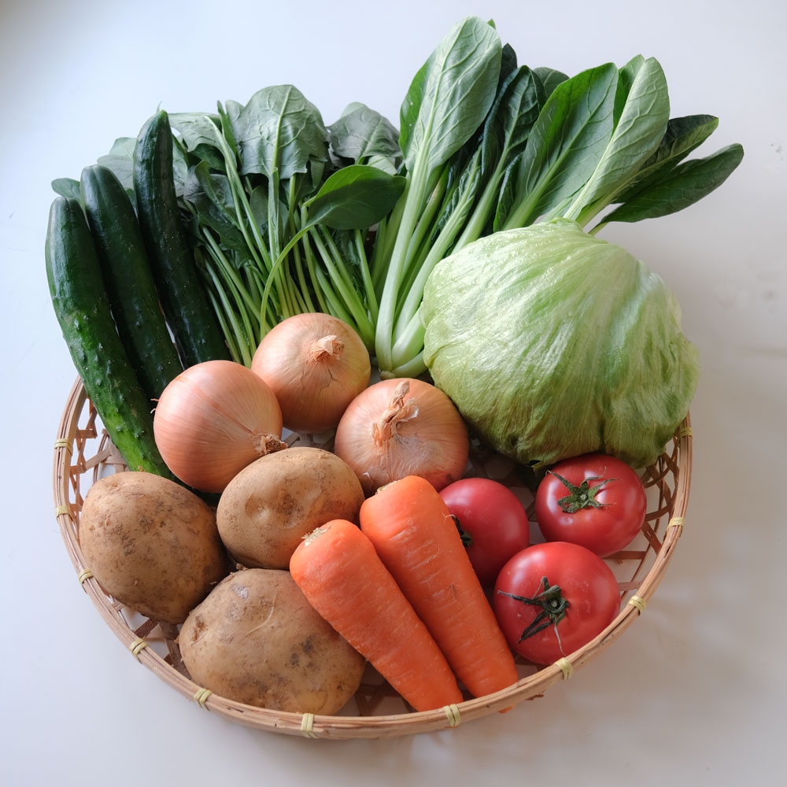
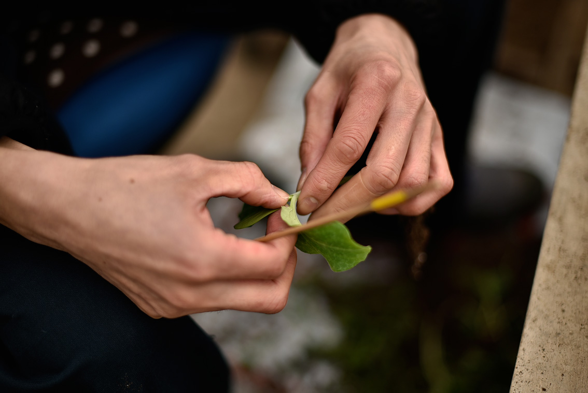

ジオ・キッチンの
お試しセット
ご入会前に
特別価格で
お試しできます

通常会員価格2,808円の多菜セットを
初回限定・特別価格
1,500円(税込/送料無料)にて
ご自宅までお届け致します。
商品カタログ、ご入会案内の資料を同封します。
実際に会員様にお届けしている「多菜セット」と同じ内容をお届けします。
旬の有機野菜が入ってきますので、中身の野菜は何が入るかお楽しみです。
※お試しセットは初回限定となります。また、同じご住所・メールアドレスで複数のお申込みはできません。
GEO・KITCHENの３つのこだわり
無農薬&自家栽培
- GEO・KITCHENの野菜は全て自家栽培。
- 農薬を一切使わずに作られているため安心の製法です。小さなお子様からお年寄りもご安心してお召し上がり頂けます。
こだわりの水を使用
- GEO・KITCHENは奈良県明日香村の地下水道から湧き出る水を使用しています。
- 浸透圧の高い非常に綺麗な純粋として広く知られています。
迅速な宅配サービス

- GEO・KITCHENの野菜は迅速にお客様のお手元まで配達致します。
- 新鮮な野菜をできる限り新鮮な状態でお届けしたいので、全国即日配達を承っております。
- ※正午12時までのご注文に限ります。
お申し込みの流れ
- ❶ネットでお申し込み
- ❷お試しセットと資料をお届け
- ❸気に入ったら、ご入会手続きをして宅配スタート！
©GEO・KITCHEN2020
- >トップページ
- >ジオ・キッチンについて
- >宅配サービスについて
- >お知らせ
- >ジオ・キッチンの商品
- >ご利用ガイド
- >よくある質問
- >オーガニックって何？
- >ジオ・キッチンのお知らせ